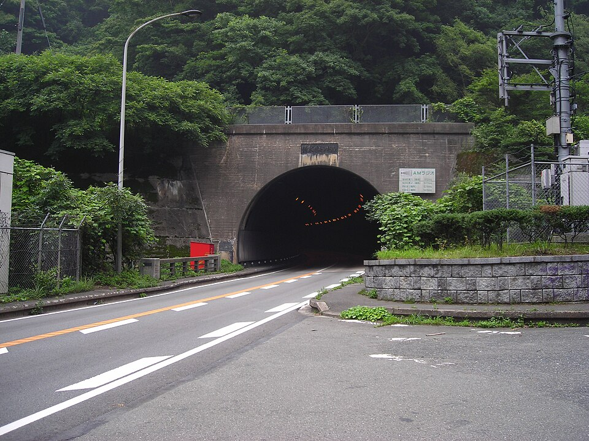
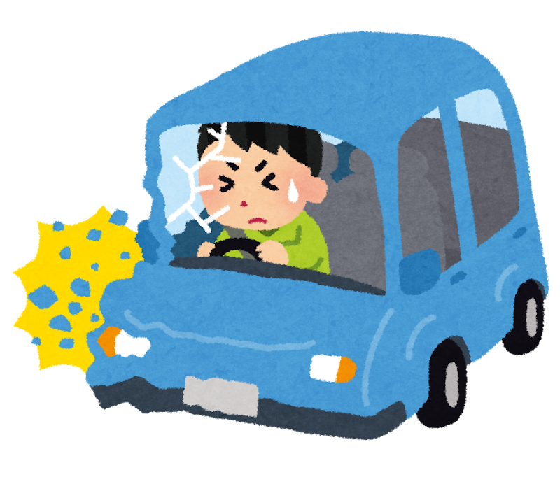
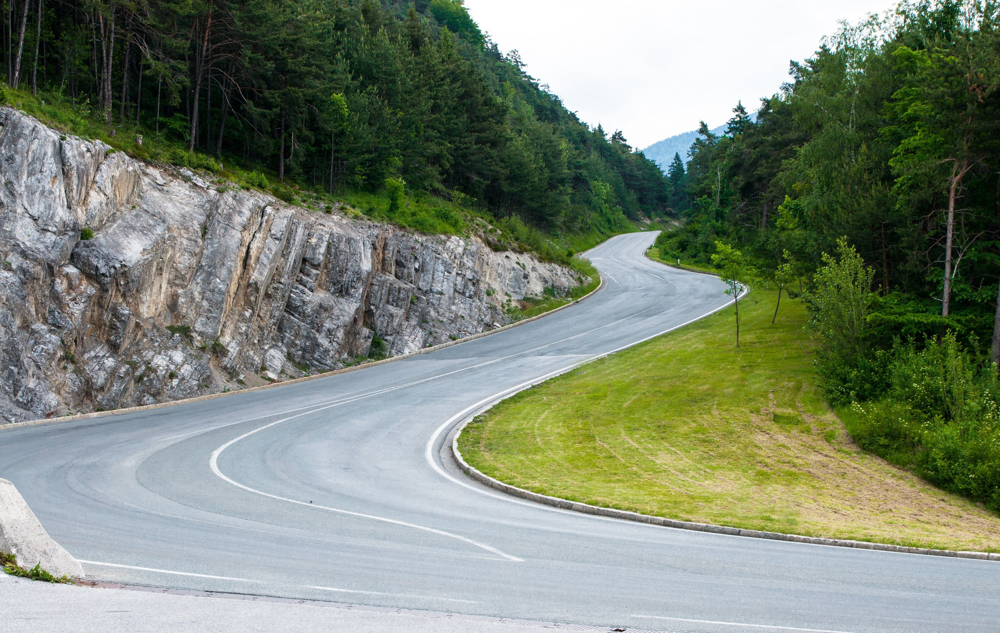
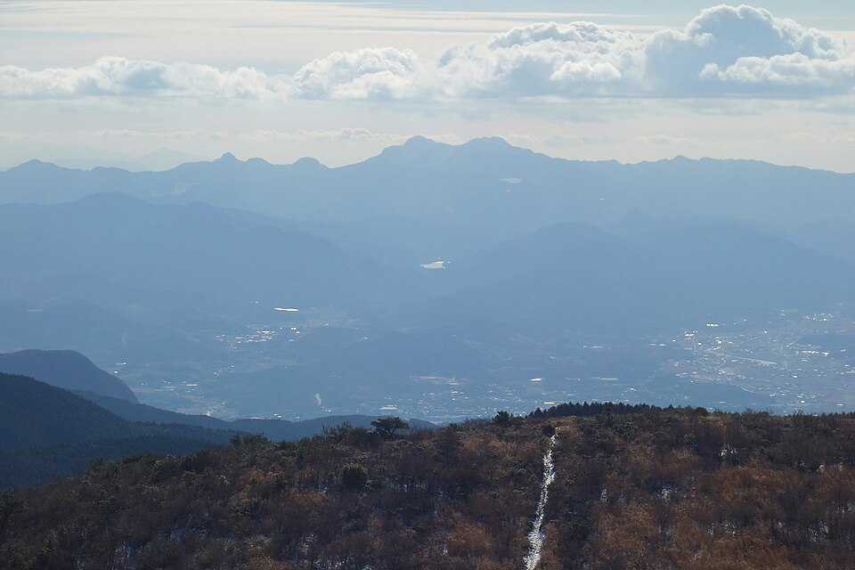
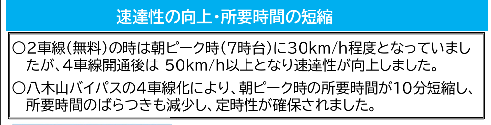
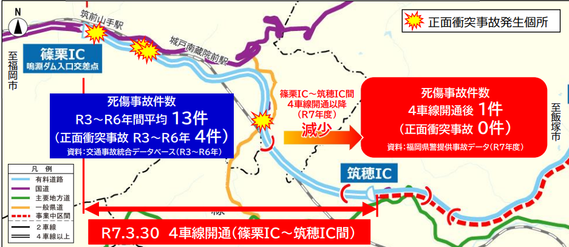
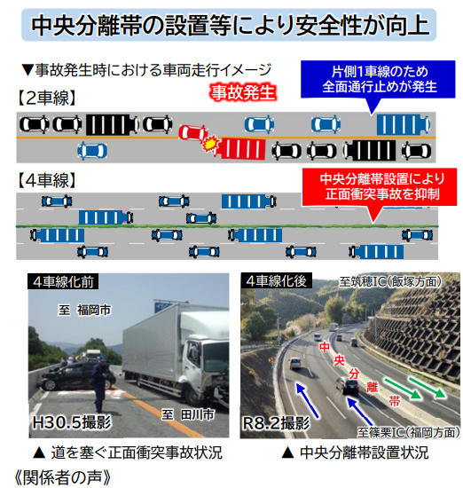
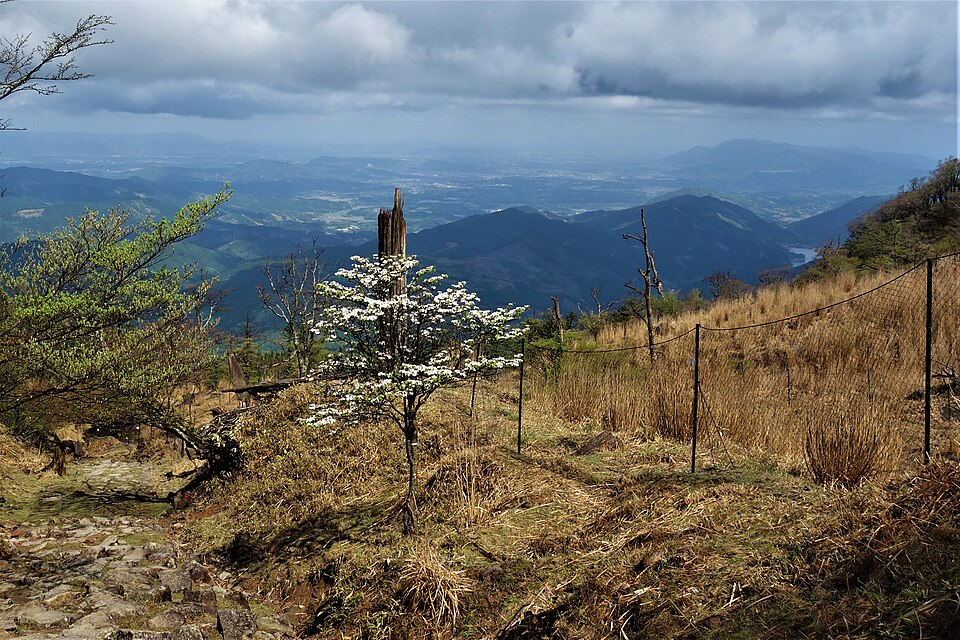
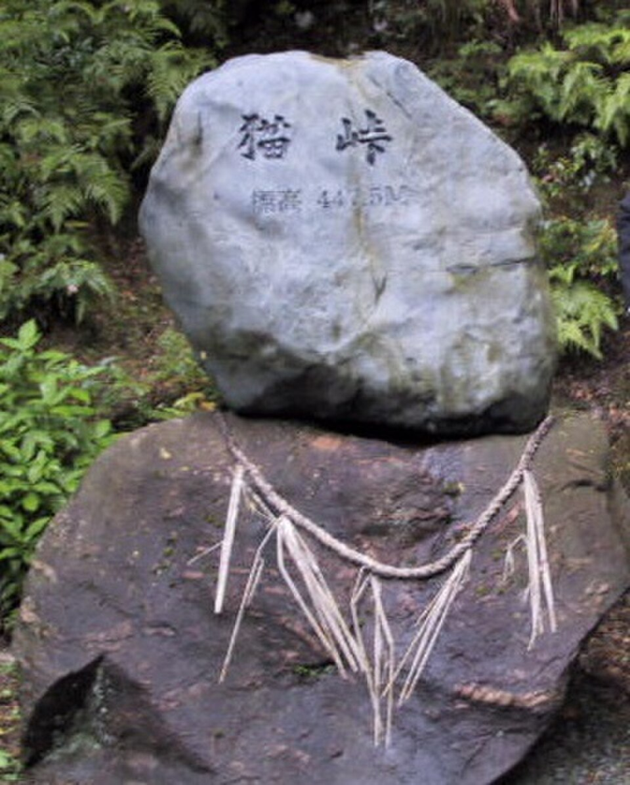
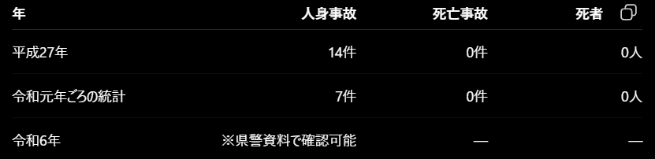

峠…それはくねくねと続くワインディングロード、 美しい景色、そして車やバイクを走らせる高揚感…
峠は、モータースポーツの歴史や独自の自動車文化において、 長年多くのドライバーを魅了してきました。
しかしその裏腹には、視界の効かないカーブや予測が 不可能な路面変化…その限界を超えた走行が生む 交通事故の数々…
そんな中で本サイトでは、日本のモータースポーツ文化に 欠かせない「峠」の歴史や魅力を紐解き、そこに潜む危険性と 実際の事故率データから安全に向き合うための意義を考察します。
交通規制によって走行できる場所や時間が限られる中、 峠の名所における事故率の発生状況を知る機会が少ないと 感じました。
そこで福岡の各峠の事故率や事故の特徴をまとめ、 安全な走行への意識向上につなげることを目的として、 このページを作成しました。

八木山峠とは福岡県糟屋郡篠栗町と飯塚市に跨る 標高227mの峠です。
この峠は篠栗へ下ると七曲りという桜の名所が存在し、 その周り周辺では飯塚市街を一望できる見どころスポットでもあります。


急勾配やカーブが多い八木山峠に並行して整備された 八木山バイパスでは、道路構造の改善が進められています。
2025年3月30日、 篠栗IC～筑穂IC：約5.7km が4車線化されました。
4車線化以前の2車線対面通行区間では、 中央分離帯のない対面通行であったことから、 速度超過やカーブでの対向車線へのはみ出しによる 正面衝突などが課題となっていました。



英彦山（ひこさん）は、福岡県と大分県の県境にある山で、 古くから山岳信仰の聖地として知られています。 豊かな自然や歴史的な建物があり、 登山や観光スポットとしても人気があります。

英彦山については、今回確認した資料だけでは 八木山峠のように整理された個別事故率データを 確認することができませんでした。
そのため、英彦山の道路環境や天候などから、 どのような状況で事故リスクが高くなるのかを 考察しました。
見通しが悪いカーブでの速度超過や 膨らみ出しに注意が必要です。
休日や紅葉シーズンなどは交通量が増加し、 普段走り慣れていないドライバーや ツーリング利用者も増える可能性があります。
標高が高い場所では、 冬季の積雪・路面凍結や 霧による視界不良などにも 注意が必要です。
特徴： 標高が高いため、冬季の積雪や路面凍結、 年間を通じた濃霧の発生率が高い。
危険性： 慣れないドライバーのスリップ事故や、 視界不良による見落としリスク。
特徴： 主要地方道や国道などをはじめ、 連続するヘアピンカーブと急勾配が存在。
危険性： 見通しの悪いカーブでの速度超過、 車線の中央寄り・膨らみ出しによる 対向車との接触・正面衝突リスク。
英彦山神宮や紅葉の名所を抱える観光地であり、 休日・行楽シーズンに交通量が集中する 可能性があります。
普段走り慣れていない観光客や二輪利用者などの増加により、 速度差や急ブレーキなどに注意が必要です。
場所・道路： 福岡県宮若市と糟屋郡篠栗町の境に位置し、 主要地方道「福岡県道92号 宗像篠栗線」が通る峠です。
標高： 約450m。
道路の特徴： カーブが連続するワインディングロードで、 普通車だけでなくツーリングを楽しむバイクも多く走行します。
安全性： 交通量・急カーブが続くため過去には 暴走運転対策が行われた区間もあり、 悪天候時には交通規制が行われることがあります。
また、国道のような直轄の「事故危険区間」リストには 指定されていません。
周辺スポット： 篠栗町側に「樹芸の森」や 「篠栗四国八十八ヶ所」の札所などがあります。

猫峠も残念ながら、今回確認した資料では詳細な事故データを 十分に確認できませんでした。
そのため、この峠の道路環境から考えられる危険と、 そのリスクの防止方法を整理します。

参考： Wikimedia Commons「Mountain passes of Fukuoka prefecture」
総じて、猫峠・八木山・英彦山はいずれも山間部の道路であり、 急カーブや見通しの悪い箇所、天候による路面状況の変化 などが事故のリスクにつながります。
特に速度超過や無理な追い越し、 対向車との接触には注意が必要です。
そのため、 道路状況や天候を事前に確認 し、 速度を抑え、周囲の状況に注意して 安全に走行する ことが重要です。